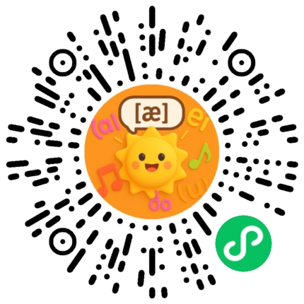

英语国际音标 48个发音对照表
欢迎使用英语音标学习点读工具。本页涵盖了标准的
48个音标
，包括
元音
和
辅音
的分类读法、发音特点及例词，助您掌握最正宗的英语国际音标读法。
元音(20个)
Vowels
单元音
Monophthongs
高元音
High Vowels
/iː/
s
ee
详情
/ɪ/
s
i
t
详情
/uː/
t
oo
详情
/ʊ/
p
u
t
详情
中元音
Middle Vowels
/e/
b
e
d
详情
/ɜː/
b
ir
d
详情
/ə/
a
bout
详情
/ʌ/
c
u
p
详情
/ɔː/
s
aw
详情
低元音
Low Vowels
/æ/
c
a
t
详情
/ɑː/
c
ar
详情
/ɒ/
h
o
t
详情
双元音
Diphthongs
/eɪ/
d
ay
详情
/aɪ/
m
y
详情
/ɔɪ/
b
oy
详情
/aʊ/
n
ow
详情
/əʊ/
g
o
详情
/ɪə/
ear
详情
/eə/
air
详情
/ʊə/
s
ure
详情
辅音(28个)
Consonants
塞音
Plosives
/p/
p
en
详情
/b/
b
ag
详情
/t/
t
ea
详情
/d/
d
og
详情
/k/
k
ey
详情
/g/
g
o
详情
鼻音
Nasals
/m/
m
an
详情
/n/
n
o
详情
/ŋ/
si
ng
详情
擦音
Fricatives
/f/
f
ish
详情
/v/
v
oice
详情
/θ/
th
ink
详情
/ð/
th
is
详情
/s/
s
un
详情
/z/
z
oo
详情
/ʃ/
sh
ip
详情
/ʒ/
mea
s
ure
详情
/h/
h
ouse
详情
塞擦音
Affricates
/tʃ/
ch
air
详情
/dʒ/
j
ob
详情
近音
Approximants
/w/
w
e
详情
/r/
r
ed
详情
/j/
y
es
详情
边音
Lateral
/l/
l
ove
详情
辅音连缀
Clusters
/tr/
tr
ee
详情
/dr/
dr
ive
详情
/ts/
ca
ts
详情
/dz/
be
ds
详情
扫码体验微信小程序版，随时随地学音标

发音特点
例词
我知道了